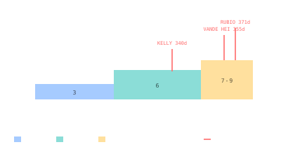

Expedition Cadence
Stations run on rolling 6-month crew rotations — a balance of suit consumables, vehicle shelf-life, training pipelines, and human physiology.

101 · zoom in
Why six months? It's the answer to several constraints meeting in one place. Soyuz and Crew Dragon spacecraft are certified to stay docked for ~210 days before their thrusters and seals need refreshing. Russian Orlan EVA suits are recharged on the ground every six months. NASA's bone-loss countermeasure data is most reliable in 6-month buckets. Rotating one third of the crew every 4-6 months keeps fresh hands on board without hot-bunking.
ISS started with 3-person expeditions (Expedition 1 in 2000) and stepped up to 6-person crews in 2009 once the lifeboat capacity was there. Each expedition typically runs ~6 months. Some run longer — Frank Rubio's accidental 371-day stay (Expedition 67/68/69) happened when his Soyuz was damaged by debris and a replacement had to be ferried up.
Tiangong started with shorter rotations (Shenzhou 12: 92 days; Shenzhou 13: 183 days) and stabilized at ~6 months from Shenzhou 14 onward. Crews of three rotate; the outgoing and incoming crews share about a week on board to hand over operational state.
Constraints driving the ~6-month cadence: docked-spacecraft certification (Soyuz: 210 days; Crew Dragon: 210 days; Shenzhou: 180-210 days), EVA suit ground refurbishment cycles, food-pantry capacity per resupply, and the NASA Human Research Program's preference for 6-month bone-loss data brackets.
ISS expeditions: numbered sequentially since Expedition 1 (Nov 2000). Crew sizes — 3 (Exp 1-19), 6 (Exp 20-63), variable 7-9 with Crew Dragon overlap (Exp 64-).
Handover: incoming Soyuz/Crew Dragon docks 5-10 days before the outgoing departure. Both crews share the station, conduct briefings, transfer cargo, then the outgoing crew undocks. Combined-crew period is the most resource-stressed: more bodies, more CO₂, more food consumption.
Long-duration outliers: Polyakov 437.7 d (Mir, 1994-95, deliberate Mars-class endurance test); Rubio 371 d (ISS, 2022-23, contingency); Vande Hei 355 d (ISS, 2021-22, Soyuz seat shuffle); Kelly + Kornienko 340 d (ISS, 2015-16, twin-study programme).
Tiangong cadence: Shenzhou 12 (92 d), 13 (183 d), 14 (186 d), 15 (186 d), 16 (155 d), 17 (187 d), 18 (192 d). Stable rhythm matching ISS practice.